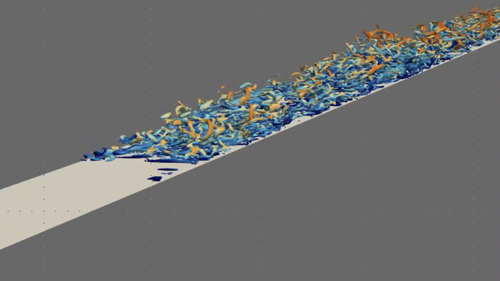
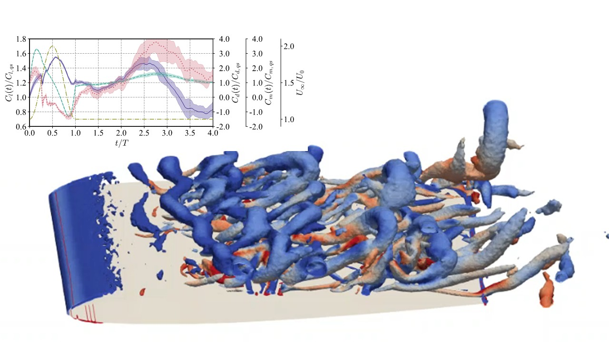
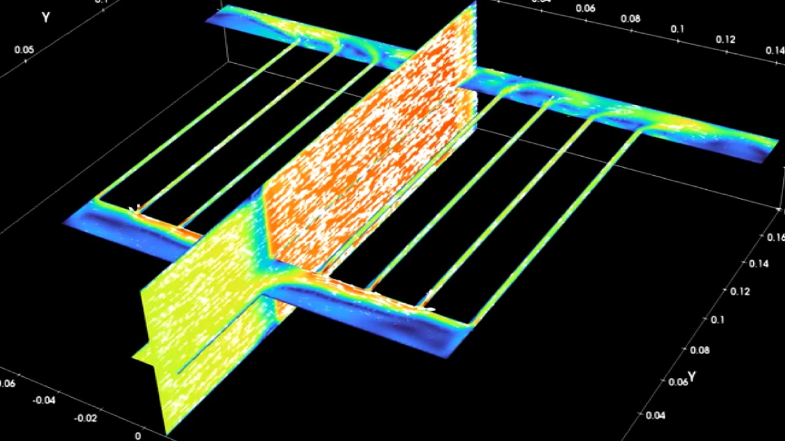
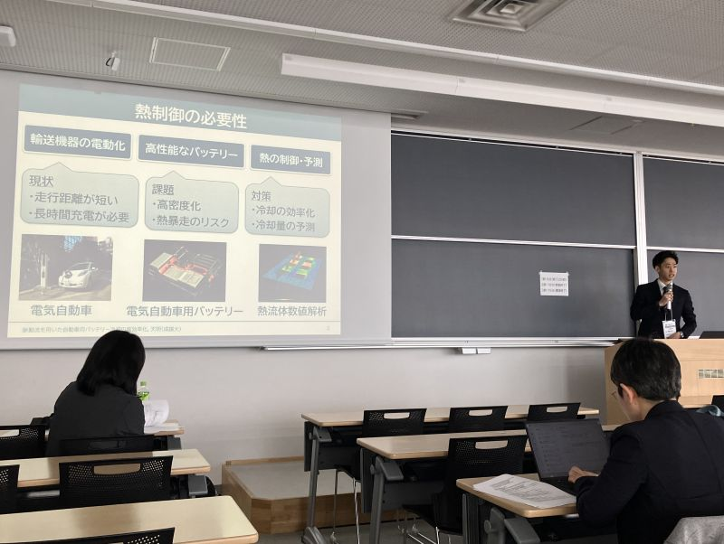
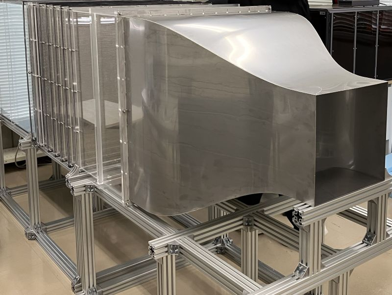
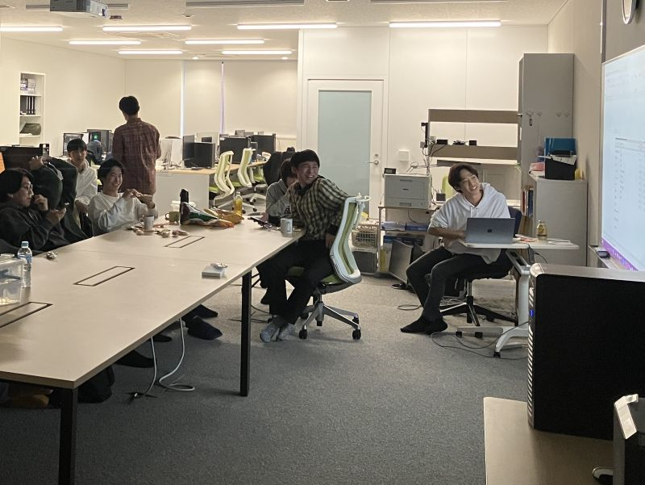

01Project 01
Boundary-Layer Transition
境界層遷移と流れの制御
大型航空機の空気抵抗低減やタービンブレードの高度伝熱制御を目的に前縁受容性、境界層不安定性、層流・乱流遷移現象を対象として、高精度数値シミュレーションと風洞実験の両面から研究を行っています。外乱がどのように不安定波へ変換され、最終的に乱流へ遷移するのかを解明し、流れの制御や抵抗低減、高効率な航空・輸送システムの実現を目指しています。


01Project 01
境界層遷移と流れの制御
大型航空機の空気抵抗低減やタービンブレードの高度伝熱制御を目的に前縁受容性、境界層不安定性、層流・乱流遷移現象を対象として、高精度数値シミュレーションと風洞実験の両面から研究を行っています。外乱がどのように不安定波へ変換され、最終的に乱流へ遷移するのかを解明し、流れの制御や抵抗低減、高効率な航空・輸送システムの実現を目指しています。

02Project 02
翼の突風応答と制御
小型無人航空機や次世代航空モビリティでは、低レイノルズ数条件において突風や渦状外乱の影響を強く受けることが知られています。本研究では、数値シミュレーションと風洞実験を組み合わせ、翼の非定常空力応答や渦構造の変化を解析しています。外乱に対する流体力学的メカニズムを解明するとともに、流れ制御技術や高い飛行安定性・安全性を実現するための設計指針の構築を目指しています。

03Project 03
自動車向けバッテリーの冷却
電気自動車（EV）やハイブリッド車の性能、安全性、寿命を向上させるためには、バッテリー温度を適切に管理することが重要です。本研究では、従来の定常空冷に代わる新しいバッテリー冷却技術を研究しています。流れ場や温度境界層に対して能動的に渦度供給し、熱伝達を促進することで、限られた送風量での高い冷却性能を目指します。
Theoretical investigation of discharge and pressure distribution of a pipe with a continuous longitudinal slot
Yu Nishio, Takanobu Ogawa, Yuki Toda, Masataka Morimatsu, Ryohei Unno, Ayumu Inasawa
Journal of Fluid Science and Technology — 17(4) 1–15
Onset of nonlinearity in a two-dimensional thin shear layer
Seiichiro Izawa, Tatsuya Oku, Yu Nishio, Yu Fukunishi
Fluid Dynamics Research
Experimental and numerical study on liquid pouring from a beverage can
Yu Nishio, Takanobu Ogawa, Keiji Niwa, Hirohisa Chiba
Journal of Food Engineering — 291, 110237
Flow measurement around the edges and curved outer surface of a rotating disk
Yu Nishio, Kohei Komori, Seiichiro Izawa, Yu Fukunishi
Journal of Fluid Science and Technology — 16(1) 1–11 (JFST0003)
Simulation of collisions of two droplets containing two different liquids using incompressible smoothed particle hydrodynamics method
Yu Nishio, Kohei Komori, Seiichiro Izawa, Yu Fukunishi
Theoretical and Computational Fluid Dynamics — 34, 105–117
Experimental study on artificial environment to promote onset of turbulence
Yukizumi Yanagisawa, Yu Nishio, Seiichiro Izawa, Yu Fukunishi
Journal of Fluid Science and Technology — 15(3) JFST0017
Investigating swirl and tumble using two prototype inlet port designs by means of multi-planar PIV
Athanasia Kalpakli Vesster, Yu Nishio, Henrik Alfredsson
International Journal of Heat and Fluid Flow — 75, 61–76
The Effect of Downstream Turbulent Region on the Spiral Vortex Structures of a Rotating Disk Flow
Keunseob Lee, Yu Nishio, Seiichiro Izawa, Yu Fukunishi
Journal of Fluid Mechanics — 844, 274–296
Key vortical structure causing laminar-turbulent transition in a boundary layer disturbed by a short-duration jet
Joe Yoshikawa, Yu Nishio, Seiichiro Izawa, Yu Fukunishi
Physical Review Fluids — 3(1) 1–20
Effects of Location of Excitation on the Spiral Vortices in the Transitional Region of a Rotating-Disk Flow
Keunseob Lee, Yu Nishio, Seiichiro Izawa, Yu Fukunishi
Physics of Fluids — 29(8) 1–9
流れや熱は、航空機、自動車、エネルギー機器など数多くの工学システムを支える基盤技術です。私たちは「なぜそうなるのか」を理解し、新しい技術につなげることを目指しています。航空機や自動車などの輸送機器や熱流体、シミュレーションに興味のある学生はもちろん、「何か面白いことを研究したい」という学生も歓迎します。一緒に未知の現象を探究していきましょう。
熱・エネルギー研究室では、流体力学・伝熱工学を基盤として、航空機、風力発電、電気自動車、液滴・液膜、数値シミュレーション、風洞実験に関する研究を行っています。現象を「なんとなく理解する」のではなく、実験と数値解析を用いて現象を定量的に解明することを重視しています。
実験技術（風洞実験、可視化、速度計測、温度計測、圧力計測）、数値熱流体シミュレーション（格子法、粒子法、最適化）、プログラミング/情報スキル（Fortran、C言語、Python、TeX、Linux、AI活用）、プレゼンテーションスキル、熱流体力学を学べます。
研究を通じて、問題設定能力と解決能力、論理的思考力、数値解析能力、実験技術、プレゼンテーション能力、最新の情報技術を使いこなす力を身につけることができます。これらは、航空宇宙、自動車、エネルギー、建築、機械・電機メーカー、IT・データサイエンスなど幅広い分野で活かすことができます。
研究室ではプログラミングや実験、シミュレーションの基礎から学べるため、専門知識や経験がなくても心配はありません。学会発表や共同研究に参加する機会もあり、自ら考え、発信する力を身につけることができます。研究を通じて他者と協力しながら成長していくことを大切にしています。

Conference Presentation
学会発表
国内外の学会で研究成果を発表します

Wind Tunnel Experiment
風洞実験
流れの可視化や各種計測を行います

Laboratory Meeting
研究室ミーティング
研究の進捗やアイデアを共有します
本研究室では、熱流体工学分野における新しい知見の創出と社会実装を推進するとともに、学生の研究活動の充実を図るため、企業・公的機関の皆様との共同研究、受託研究、技術相談、寄付を積極的に受け入れています。
共同研究・受託研究では、企業や機関の皆様と研究課題を設定し、研究室の学生が主体となって研究活動に取り組みます。教員が研究全体を指導・管理し、学生１～２名を中心に約１年間、定期的な打合せや成果報告を通じてプロジェクトを推進します。大学研究ならではの挑戦的な取り組みも含まれるため、一定の試行錯誤やリスクを許容いただきながら、中長期的な視点で共同研究を進められば幸いです。
まずはお気軽にお問い合わせください。内容に応じてオンラインまたは対面での打ち合わせを実施いたします。
お問い合わせ航空機・ドローンの空力解析，垂直軸風車の性能解析
DNS，LES・RANS，多目的最適化，埋め込み境界法
可視化，圧力計測，微差圧計測，熱線流速計，空気力測定
自動車用バッテリー冷却
液滴，液膜，自由表面流れ，津波，人流シミュレーション
境界層遷移，乱流現象，渦流れ
研究室構成員
卒業生進路（（）は外部生）
三菱電機 / TMEIC / 日産自動車 / アイシン精機 / ゼネラル / 大都技研 / KOKUYO / 横河電機 / 三菱電機エンジニアリング / SUBARUテクノ / （三菱重工 / 東芝エレベーター）
鹿島建設 / 東京メトロ
Sky / SCSK / 明治安田生命（SE職）/ 丸紅ITソリューションズ / マーブル / クレスコデジタルテクノロジー
NX商事
成蹊大学大学院 / 航空大学校
西尾が企画運営する理系女子中高生向け理系女子教育プログラム（WTP-Global）が8/1から8/5まで開催されます。
第１０４期日本機械学会流体工学部門講演会で１件の発表が予定されています。
日本機械学会２０２６年度年次大会で３件の発表が予定されています。
アメリカで開催されるICJWSF2026で１件の発表が予定されています。
仙台で開催されるICFDで１件の発表が予定されています。
研究室のホームページを新たに立ち上げました。
アクセス
JR中央線・総武線 吉祥寺駅より徒歩15分